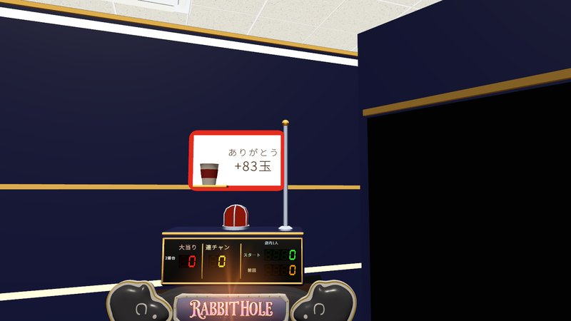
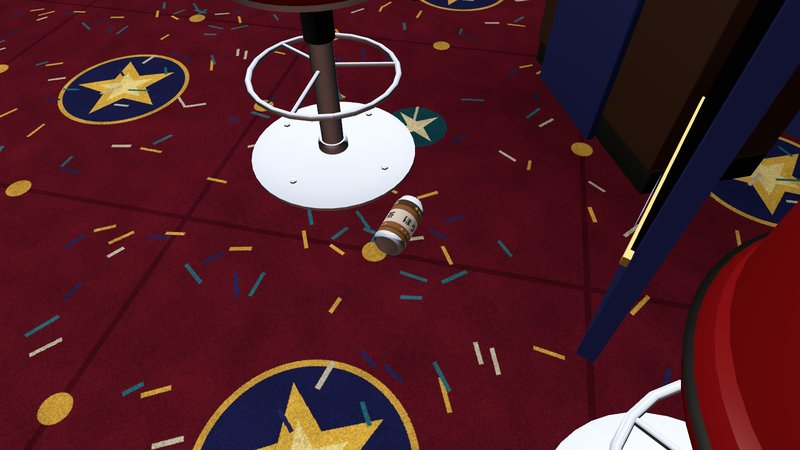
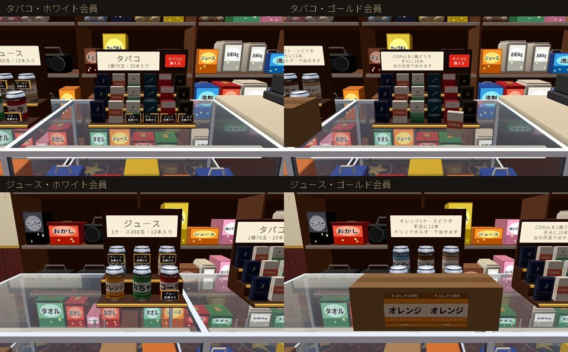
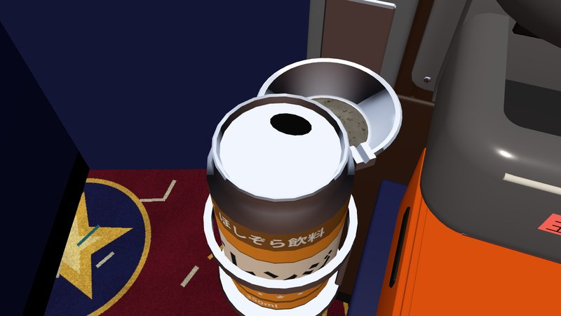

最后更新：2026-11-23（周一）
店内玩法
店内玩法汇总。机台规格请看各机种的页面。
店内地图

| 位置 | 有什么 |
|---|---|
| 正中间 | 机台岛。前排是 RABBIT HOLE 6 台，后排是 STAR PARADE 6 台 |
| 进门左边 | 奖品柜台、香烟和饮料的货架、计数机（柜台最里面的一端）、咖啡推车（西侧墙边） |
| 进门右边 | 你的成绩屏幕、排行榜（东侧墙）、最里面是休息区（状况板、电视、垃圾桶） |
| 通道上方 | 电子显示屏 |
| 店外 | 神秘古董商 Hoshino Shokai（出生点左边，停车场边上的小屋） |
※出生点在店前的停车场。
占台方法
- 在空台上按 打つ（打，手柄上的红色按钮）、玉を借りる（借珠）、貯玉から出す（取出存珠）中的任意一个，就能占到这台。不用坐下
- 有珠就会自动打。力度也是自动的（转得最多的力度）
- PUSH 要按点阵显示前面出现的按钮
- 珠箱里的珠一打就会自动回到上盘
- 离开台子 2.2 m 就会停止打珠。还有珠，或者处于保留、旋转、大当、确变、时短中时，台子会替你保留 3 分钟
钢珠与存珠
| 借珠 | 500 Mi 换 125 颗（1 颗 4 Mi） |
|---|---|
| 取出存珠 | 每次 125 颗 |
| 上盘 | 最多 250 颗。满了会溢到下盘 |
| 下盘 | 最多 500 颗。快满时会自动倒进珠箱 |
| 珠箱 | 最多 1,000 颗。装满的珠箱会被堆起来（最多 20 箱） |
※没计数就回去也没关系，下次来时台上的珠会进入存珠。
计数与奖品
- 在计数机按 計数（计数），台上的珠会被数好并进入存珠。珠箱会在计数机上倾倒，珠子流进去
- 按 景品に換える（换成奖品），把存珠换成奖品。用「－」「＋」选 250 颗的奖品（深蓝盒）和 25 颗的奖品（红盒）的数量。全部（全部）会换到能换的最大数量
- 没换的珠会留在存珠里。也可以用来换香烟和饮料


※盒子的颜色随会员等级变化。白色会员是深蓝和红。

神秘古董商（Hoshino Shokai）

在店外，出生点左边的小屋。不知为什么会收购店里的奖品。在小窗口按 景品を出す（交出奖品），手上的奖品就会换成 Mi。据说和店家没有关系。
| 会员等级 | 250 颗的奖品 | 25 颗的奖品 | 每颗 |
|---|---|---|---|
| 白色 | 750 Mi | 75 Mi | 3 Mi |
| 蓝色 | 800 Mi | 80 Mi | 3.2 Mi |
| 绿色 | 850 Mi | 85 Mi | 3.4 Mi |
| 红色 | 925 Mi | 92 Mi | 3.7 Mi |
| 金色 | 1,000 Mi | 100 Mi | 4 Mi |
※到金色才是等价（每颗 4 Mi，和借珠的价格一样）。
赚钱
初次持有 5,000 Mi。持有 Mi、存珠和奖品下次来时也还在。
| 方法 | 能得到 | 备注 |
|---|---|---|
| 咖啡售货员 | 3 杯换存珠 250 颗 | 距下一份工作 20 秒 |
| 捡垃圾 | 空罐、烟蒂每个 10 颗（存珠） | 附带 1 分钟出珠提升 |
| 每日任务 | 存珠 50～125 颗（每周任务 375～625 颗） | 每天 3 个，每周 1 个 |
咖啡售货员

- 在咖啡推车的立牌上选 売り子を始める（开始售卖）。托盘会出现在手上（VR 在左手，桌面版在画面下方）
- 机台上方会立起订单牌。红牌是热咖啡，蓝牌是冰咖啡
- 用推车上的壶装热咖啡，用冰壶装冰咖啡，放进托盘（最多 3 杯）
- 按订单牌把咖啡递过去。递满 3 杯，存珠加 250 颗
- 到下一份工作前休息 20 秒




捡垃圾与送礼
- 空罐和烟蒂在休息区垃圾桶的洞口上方松手就能扔掉。不管是谁的，空罐和烟蒂每个都给存珠 10 颗，并附带 1 分钟出珠提升
- 地上的垃圾每 25～50 秒会在机台周围冒出来（最多 6 个）
- 把饮料或香烟放到别人正在玩的机台的杯架或烟灰缸里，就算送礼。送的人和收的人都会得到 1 分钟出珠提升


每日任务

每天 3 个、每周 1 个，从下面的任务里抽取。
- 转动机台 100 次
- 中 1 次大当
- 用计数机数珠
- 把珠换成奖品
- 把奖品拿给神秘古董商
- 送 1 杯咖啡
- 扔掉 3 个空罐
- 抽 1 根烟
香烟与饮料
用存珠换来，在机台上使用就会获得出珠提升。棒状奶酪“Hoshizora Cheese”和香烟的待遇一样。
| 香烟 | Hoshizora Cheese | 饮料 | |
|---|---|---|---|
| 价格 | 存珠 70 颗换 1 盒 20 根 | 存珠 70 颗换 1 袋 20 根 | 存珠 300 颗换 1 箱 12 罐 |
| 拿出的地方 | 按机台的烟灰缸，拿出 1 根 | 按烟灰缸前面的杯架，拿出 1 罐 | |
| 使用 | 拿在手里使用就会点火 | 拿在手里使用就会剥开包装 | 拿在手里使用就会打开 |
| 送到嘴边 | 抽。大约 10 口就会烧到滤嘴附近 | 咬。大约 15 口吃完 | 喝。8 口见底 |
| 出珠提升 | 点着火的期间 | 吃的期间 | 打开后里面还有饮料的期间 |
| 一直拿着不动 | 不抽 4 分钟也会烧完 | 不吃 4 分钟也会处理掉 | 打开后 4 分钟会变空 |
兑换方法与品牌
- 香烟在奖品柜台展示柜上方的架子。按品牌那一列就能换 1 盒该品牌。红色的「タバコに換える」（换成香烟）按钮是最后换过的品牌
- Hoshizora Cheese 在香烟架和饮料层之间的箱子。白色会员起就能换
- 饮料在同一个柜台的饮料层。按样品罐就能换 1 箱该种类。层前面会出现箱子 4 秒
- 存珠不够会显示「貯玉が足りません」（存珠不足）。手上的数量按品牌分别保留到下次来
能换的品牌会随会员等级增加。还不能换的商品也摆在架子上，贴着「ブルー会員から」（蓝色会员起）之类的牌子。按下去会显示「AURUM 要金色会员起」之类的话。手上已有的饮料不受等级限制，都能拿出来。
| 会员等级 | 香烟 | 饮料 |
|---|---|---|
| 白色 | MOONRISE、CORAL | 橙汁、茶 |
| 蓝色 | MINT LEAF | 可乐 |
| 绿色 | COMET | 汽水 |
| 红色 | SCARLET | 咖啡 |
| 金色 | AURUM | 奶茶 |


拿出方法
- 按烟灰缸，手上会拿出 1 根放在烟灰缸的凹槽里。烟灰缸上最多放 1 根
- 按杯架，手上会拿出 1 罐立在杯架上。杯架上立着罐子时拿不出来
- 拿出的是最后换过的品牌。饮料的该种类用完后，会拿出剩下的其他种类
- 烟灰缸上方会显示剩余数量 3.5 秒。手上是 0 时会显示「タバコはカウンターで」（香烟请去柜台换）「ジュースはカウンターで」（饮料请去柜台换）
- 店内同时能拿出的香烟最多 16 根，罐子最多 16 个
使用方法
| VR | 桌面版 | |
|---|---|---|
| 抽烟 | 把滤嘴凑到离嘴 5.5 cm 以内 | 拿在手里使用就会送到嘴边 |
| 烟灰 | 火头外面会长出烟灰，到 1.6 cm 就会掉落。VR 里使用可以弹掉 | |
| 喝饮料 | 把盖子凑到离嘴 8 cm 以内再倾斜。装满时 25°，越接近空越深，最深到 70° | 拿在手里使用，会从下方送到嘴的右边（1 口 1 秒） |
| 吃奶酪 | 拿法和送到嘴边的方法和香烟一样。送到嘴边就会咬一口，变短 | |


放下后多久消失
| 状态 | 消失前的时间 |
|---|---|
| 把点着火的香烟放在烟灰缸里 | 90 秒后火熄灭，烟蒂 25 秒后消失 |
| 没点火就放在烟灰缸里 | 2 分钟 |
| 把香烟掉在地上等地方 | 90 秒后火熄灭，掉落 5 分钟后消失 |
| 把奶酪放着不管 | 90 秒 |
| 打开的罐子 | 不喝也会在 4 分钟后变空 |
| 把空罐放在杯架上 | 20 秒（按杯架会收走，换下一罐） |
| 把空罐放在地上等地方 | 5 分钟 |
| 放下没打开的罐子 | 杯架上 10 分钟，其他地方 3 分钟。会回到拿出它的人手上 |
效果
不管是拿在手里，还是放在烟灰缸或杯架上，大奖口每计 1 次的奖球都会 +1（出珠提升）。品牌越靠上，抽完或喝完之后，出珠提升残留的时间越长。
| 品牌的等级 | 结束后残留的时间 |
|---|---|
| 白色（Hoshizora Cheese 也一样） | 0 秒 |
| 蓝色 | 15 秒 |
| 绿色 | 30 秒 |
| 红色 | 45 秒 |
| 金色 | 60 秒 |
也和玄学有关（玄学）。
- ①点着香烟后 60 秒内是 ×1.08。剥开奶酪的包装也算①
- ⑤这台的杯架上立着罐子期间是 ×1.08。自己的罐子或别人替你放的罐子都可以
送礼
- 把饮料或香烟放到别人正在玩的机台的杯架或烟灰缸里，就算送礼。奶酪也一样
- 送的人和收的人都会得到 1 分钟出珠提升（连续送最多叠到 5 分钟）
- 送的人的烟灰缸上方会显示「差し入れ」（送礼），收的人的烟灰缸上方会显示「〇〇さんから ジュースの差し入れ」（某某送来的饮料）
- 效果方面，送的人每 20 秒最多一次，收的人每 10 秒最多一次
扔垃圾的方法
- 空罐和烟蒂在休息区垃圾桶的洞口上方松手。以洞口正中为中心，横向 26 cm 以内、洞口下方 35 cm 到上方 1 m 之间都会掉进去。放在盖子上的东西也算扔掉了
- 不管是谁的还是自己的，每个都给存珠 10 颗，并附带 1 分钟出珠提升（连续扔最多叠到 5 分钟）
- 连续领取时要隔 6 秒。还有饮料的罐子、没打开的罐子、点着火的香烟不给珠
- 地上的垃圾每 25～50 秒会在机台周围冒出来（最多 6 个。捡垃圾）
小知识
- 按奶酪箱前面的牌子「ほかの人のタバコをチーズに見せる」（把别人的香烟显示成奶酪）可以开关。开着的时候，别人的香烟和烟蒂会变成奶酪的样子，看不到火、烟和烟灰。只在你自己的画面里有效
- 奶酪没有火、烟、烟灰和打火机的声音。剥开时是「ぴりっ」（撕拉），咬的时候是「モグッ」（咔嚓）
- 抽烟时火会变亮，松开后过一会儿会吐烟。1 口会缩短 4～5 mm
- 罐子能从开口看到液面，喝了会下降。里面的颜色就是该种类的颜色
- 拿在手里的东西不会被别人拿走。放下的东西可以被拿走

出珠提升与玄学
出珠提升
大奖口每计 1 次的奖球 +1。
| 生效条件 | 时长 |
|---|---|
| 手上拿着或放着打开的饮料 | 期间内 |
| 手上拿着或放着点着火的香烟 | 期间内 |
| 扔掉 1 个垃圾 | 1 分钟（连续扔最多叠到 5 分钟） |
| 送礼或收礼 | 1 分钟（连续最多叠到 5 分钟） |
玄学
只在平时（通常时）、只对自己的机台，中奖概率会略微提高。合计最多 1.3 倍。不会有演出。
| 编号 | 条件 | 容易中的程度 |
|---|---|---|
| ① | 点着香烟后 60 秒 | ×1.08 |
| ② | 保留的台过了 20 秒以上才回来之后的 5 个保留 | ×1.10 |
| ③ | 同一排的隔壁台进入大当后 60 秒 | ×1.08 |
| ④ | 借珠后 30 秒 | ×1.05 |
| ⑤ | 这台上放着罐子（自己的罐子或别人替你放的罐子都可以） | ×1.08 |
人数
房间里的人数越多，珠越容易进启动口（最多 +15%）。
※生效中的加成显示在画面左下角、持有 Mi 的下面（例：出玉UP 3:10 ①④当たり×1.13 人数で回り+9%，意思是出珠提升剩 3:10、玄学①④合计 ×1.13、人数使转动 +9%）。
会员等级
按到目前为止的最高持有 Mi 提升。不会下降。
| 等级 | 最高持有 Mi | 每颗的价值 | 珠的颜色 | 卡片图案 |
|---|---|---|---|---|
| 白色 | 0 | 3 Mi | 银 | 细斜线 |
| 蓝色 | 50,000 Mi | 3.2 Mi | 蓝银 | 波浪 |
| 绿色 | 150,000 Mi | 3.4 Mi | 绿银 | 圆点 |
| 红色 | 400,000 Mi | 3.7 Mi | 红银 | 粗条带 |
| 金色 | 1,000,000 Mi | 4 Mi | 金 | 涟漪与星星 |
- 每颗的价值是神秘古董商收购奖品时的价格。金色为等价（和借珠一样 4 Mi）
- 奖品盒的底色，以及香烟和饮料的品牌，也随等级变化（品牌表）
- 画面上会显示到下一等级还差多少，例如「ブルーまであと12,300Mi」（距蓝色还差 12,300 Mi）


成绩、排行榜与显示
| 你的成绩 | 转动次数、大当、最高连庄、一击、投资、回收、收支。每 8 秒与每日任务交替切换 |
|---|---|
| 排行榜 | 本月的收支、一击、最高连庄，以及持有 Mi、历来的一击、最高连庄，共 6 页。本月的部分按月重新计算 |
| 电子显示屏 | 有人进入大当时会滚动显示「〇〇さんが7番台のRABBIT HOLEで大当り」（某某在 7 号台的 RABBIT HOLE 大当） |
| 状况板和电视 | 在休息区。显示 12 台的大当、连庄、开始转数、状态，以及依次切换拍摄正在玩的机台的摄像头 |
※一击是指一次连庄里，从大奖口出来的珠的最高数量。


画面显示

会显示会员卡和等级、持有 Mi、存珠、机台上的珠。桌面版和手机在画面左下角，VR 看向左手腕就会出现。用成绩屏幕下方的牌子可以切换显示或隐藏。
会员卡和等级、持有 Mi、持珠也会小小地显示在头像头部旁边，别人也看得到。